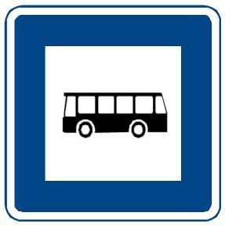

Objekty na trase:
Objekty • Smer  →
→ 
| Typ objektu | Číslo výjazdu | Smer/-y | Prejazdy | Poznámka |
|---|---|---|---|---|
| vyjazd | 0,27 | Senica ↑ | → Lužice |
III/05531 | |
| info | 0,34 | Začiatok obce: Hodonín | ||
| vyjazd | 0,97 | ZOO ← | ↑ Senica |
III/05532 | |
| info | 1,34 |  Hodonín, u podjezdu |
||
| vyjazd | 1,69 | 1. | 2. Senica | 3. Nákupní zóna |
2. | |
| vyjazd | 1,92 | 1. Brno, Kyjov  | 2. Centrum | 3. Senica, Smer SK | 2. Centrum | 3. Senica, Smer SK |
1.  , , | 2. | 2.  | 3. , | 3. , |
|
| info | 2,34 | Hodonín, Anenská | ||
| info | 3,53 | Koniec obce: Hodonín | ||
| hranice | Štátne hranice | Štátna hranica (CZ)/(SK) |
↑ ↓  |
Objekty • Smer →
| Typ objektu | Číslo výjazdu | Smer/-y | Prejazdy | Poznámka |
|---|---|---|---|---|
| hranice | Štátne hranice | Štátna hranica (SK)/(CZ) |
↓ ↑ |
|
| info | 3,63 | → Jihomoravský kraj, → Okres Hodonín | ||
| info | 3,53 | Začiatok obce: Hodonín | ||
| info | 2,46 | Hodonín, Anenská | ||
| vyjazd | 1,92 | 1. Centrum | 2. Brno, Kyjov | 3. Uherské Hradiště, Břeclav, Brno, Bratislava, Smer SK |
1. | 2. , | 3. |
|
| vyjazd | 1,69 | 1. Nákupní zóna | 2. Břeclav, Uherské Hradiště, Brno | 3. | 2. | |
| info | 1,38 | Hodonín, u podjezdu | ||
| vyjazd | 0,97 | Břeclav ↑ | → ZOO | III/05532 | |
| info | 0,34 | Koniec obce: Hodonín | ||
| vyjazd | 0,27 | Lužice ← | ↑ Břeclav | III/05531 | |
| vyjazd | 0 | Bratislava, Smer SK , Brno, Břeclav ← | → Uherské Hradište, Skalica, Smer SK |
|
Koniec cesty |